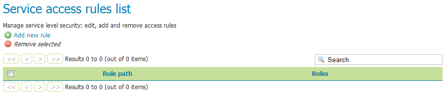
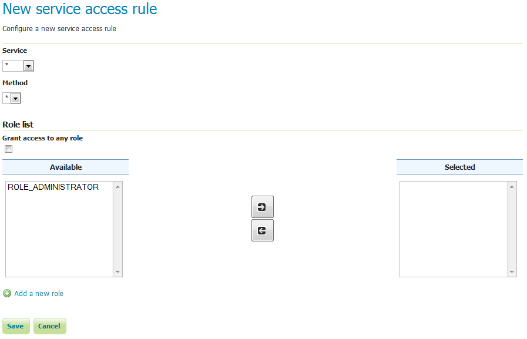

Services¶
이 섹션에서 Service Security에 대한 설정을 설명합니다. GeoServer는 OWS 서비스(WFS, WMS 등)에 기반한 접근을 제한하고 특정 작업(GetCapabilities, GetMap, 등등)도 제한할 수 있습니다.
GeoServer는 기본적으로 서비스 기반 보안을 활성화시키지 않은 상태입니다. 하지만 이 메뉴에서 규칙을 추가·제거·편집할 수 있습니다.

서비스 접근 규칙 목록
Add a new rule 링크를 클릭해서 새 규칙을 생성하십시오.

새 서비스 규칙
| 옵션 | 설명 |
|---|---|
| Service | 새 규칙을 적용할 OWS 서비스를 설정합니다. 모든 서비스를 뜻하는 * 값이나 wcs, wfs, wms 명칭을 선택할 수 있습니다. |
| Method | 새 규칙을 적용할 작업을 지정합니다. Service 항목의 값에 따라 달라지지만, 모든 작업을 의미하는 * 값은 물론 Capabilities, Transaction, GetMap 등 GeoServer가 수행할 수 있는 모든 서비스 작업을 선택할 수 있습니다. |
| Grant access to any role | 이 옵션을 체크하면 새 규칙을 적용할 롤을 지정할 필요 없이 모든 롤에 적용됩니다. |
| Role list | 규칙이 적용된 롤 목록을 포함한 전체 롤 목록입니다. 화살표 버튼으로 규칙 적용 여부를 전환(toggle)할 수 있습니다. Grant access to any role 옵션을 체크했다면 이 옵션은 적용되지 않습니다. |
| Add a new role | 새로운 롤을 추가하기 위한 링크입니다. |
이전: Data
다음: File Browsing